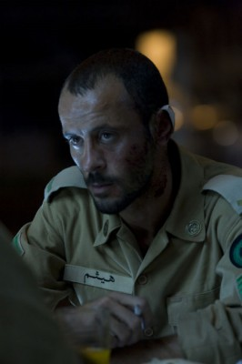

#5872 Mein Herz tanzt

 IMDB-Wertung: 7.3 / 10
IMDB-Wertung: 7.3 / 10  Metascore: 0
Metascore: 0 
Eyad besucht als einziger Palästinenser eine Eliteschule in Jerusalem. Trotz Ausgrenzung möchte er dazugehören. Mit einem anderen Außenseiter, dem israelischen Rollstuhlfahrer Yonatan, schließt er Freundschaft. Die erste Liebe zu einer jüdischen Mitschülerin macht das Leben noch komplizierter. Zwischen zwei unterschiedlichen Leben und Kulturen hin- und her gerissen, muss er am Ende eine schwer wiegende Entscheidung für die Zukunft fällen.
Jahr: 2014
Dauer: 100 Minuten
FSK: 6
Land: Israel Studio: NFP Marketing & DistributionTonspuren:
Untertitel:
Auflösung: SD (704x300) Größe: 721 MB
Genre: Drama
Regisseur: Eran Riklis
Drehbuch: Jean-Marie Poiré
Soundtrack:
Darsteller:
- Tawfeek Barhom als Eyad
- Yaël Abecassis als Edna
- Michael Moshonov als Yonatan
-  Ali Suliman als Salah
- Danielle Kitsis als Naomi
- Laëtitia Eïdo als Fahima
- Norman Issa als Jamal
- Loai Nofi als Wajdi
- Shani Klein als Nurse
 Bruno Ganz als Damiel , archive footage, uncredited
Bruno Ganz als Damiel , archive footage, uncredited- Saddam Hussein als Himself , archive footage, uncredited
- Razi Gabareen als Young Eyad
- Marlene Bajali als Aisha
- Khalifa Natour als Bassem
- Kais Natour als Wassim
- Rona Lipaz-Michael als Headmistress in Jerusalem
- Shirili Deshe als Literature Teacher
- Keren Tzur als History Teacher
- Danny Berman als Nadal
- Robby Berman als Jacob Newman
- Noa Biron als Bank Clerk
- Naomi Fromovich als Naomi's Mother
- Pauline Wiesweg als Jerusalem Street Musician
- Yasser Arafat als Himself , archive footage, uncredited
Datei: X:\2014(G-M)\Mein Herz tanzt (2014, FSK6, 704x300).mkv seit 31.03.2017
Festplatte: HD 2013(I-Z)-2014(A-Z)
 Es gibt insgesamt 136 Filme in der Gruppe '2014(G-M)'
Es gibt insgesamt 136 Filme in der Gruppe '2014(G-M)'